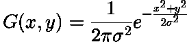
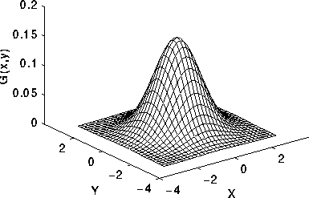
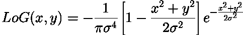
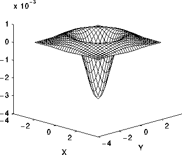

DESCRIPTION
Gaussian filter
The Gaussian smoothing operator is a 2-D convolution operator that is used to `blur' images and remove detail and noise. In this sense it is similar to the mean filter, but it uses a different kernel that represents the shape of a Gaussian (`bell-shaped') hump. This kernel has some special properties which are detailed below.
In 2-D, an isotropic (i.e. circularly symmetric) Gaussian has the form:

Which results to

The LoG (Laplacian of Gaussian filter)
The Laplacian is a 2-D isotropic measure of the 2nd spatial derivative of an image. The Laplacian of an image highlights regions of rapid intensity change and is therefore often used for edge detection (see zero crossing edge detectors). The Laplacian is often applied to an image that has first been smoothed with something approximating a Gaussian smoothing filter in order to reduce its sensitivity to noise, and hence the two variants will be described together here. The operator normally takes a single graylevel image as input and produces another graylevel image as output.
The 2-D LoG function centered on zero and with Gaussian standard deviation has
the form:

which results to

SEE ALSO
Gaussian
Smoothing
Laplacian of
Gaussian
r.neighbors
r.mapcalc
r.mask
r.mfilter
AUTHOR
Jachym Cepicky, Ustav geoinformacnich technologii, Brno
Last changed: $Date: 2009-01-27 20:48:14 $